How today works
Go at your own pace, one slide at a time. Stuck? Raise your hand and read me the slide number at the top right.
Tell me more arrows, tabs, what you need
- Move with the arrows at the top of this page, or the arrow keys on your keyboard.
- Keep two tabs open: this page in one, Gemini in another. Click between them, or press Ctrl and Tab together.
- Know how to do a step? Just do it. Not sure? Open "Show me how, step by step" for the steps and pictures.
- Nothing here is graded. No quizzes, no scores. Everything is in your workbook at the end.
What you need
- Your laptop, with Chrome open.
- Your school Google account, the one your district gave you.
- A unit you teach, if you brought one. If not, we brought one for you (slide 40).
About the pictures The step-by-step pictures come from a personal Google account. Your school account's screens may look a little different. Look for the same words. Some pictures show things you may not have, like an Upgrade button or buttons from browser add-ons; a note under those pictures says so.
Have the Gemini app on your laptop? That's fine. Sign in with the same school account. For today, please use Gemini in Chrome at gemini.google.com, so what you see matches these slides.
Three questions before every prompt
- Which account am I in?
- Is this tool district-approved?
- Would I be fine if a parent saw this prompt?
Student information stays out No names, grades, IEP or 504 details, or behavior records. Write [student] instead.
Tell me more why these three
- Which account am I in? Your school account and a personal account look almost the same on screen. They are not treated the same. Slide 8 shows the difference.
- Is this tool district-approved? Your district decides which tools you can use for school work. If you're not sure, ask before you use it with anything real.
- Would I be fine if a parent saw this prompt? If the answer is no, rewrite it. That one question catches almost everything.
Keep student information out even if your district has confirmed its protections in writing. Taking out anything that identifies a child costs nothing and protects kids. You'll see a short reminder of these three above most starter prompts today.
Grab your materials
Download the quick reference card. Rather follow along in a PDF? Grab the workbook too.
Tell me more the workbook, and your unit for later
The workbook: this whole training in one PDF, with every prompt, every step, and the pictures. Some people like it open beside the browser instead of switching between two tabs. To copy a prompt, use the Copy button on the slide. It copies the whole prompt cleanly. You'll get the workbook again at the end, along with a copy you can edit (slide 57).
Your own unit: a unit overview, a reading passage, your standards, and a few lesson slides are plenty. Google Docs, Google Slides, PDFs, and Word files all work. Take student names off anything first.
No unit with you? Use one of ours: Grade 3 science (plant life cycles) or Grade 6 ELA (point of view). They're fictional and free to use here. You'll download one unit's files on slide 40, right where you use them.
Meet Gemini
Sign in the right way, learn one prompt pattern, and make two or three things you can use tomorrow.
You can't break it If a result is strange, try again, or ask it to fix what's wrong.
One name, two things
The Gemini model is the engine. The Gemini app is the car you drive.
Tell me more engine, car, and the old name
The engine, the Gemini model, is the AI underneath. It reads what you type and writes a response. Google builds it and updates it often. You never touch it directly.
The car, the Gemini app, is what you use at gemini.google.com: the box you type in, your saved chats, Gems, and the menu where you add files.
Today you'll drive two cars: the Gemini app and Gemini Notebook (formerly NotebookLM). You may still see the old name in a few places while Google finishes the switch. When your screen looks different from these slides, it's usually because Google moved something on the dashboard.
Which account are you in?
Open gemini.google.com and check that you're signed in with your school account.
Show me how, step by step 4 steps, with pictures
- In Chrome, select gemini.google.com. It opens in a new tab, so this page stays open.
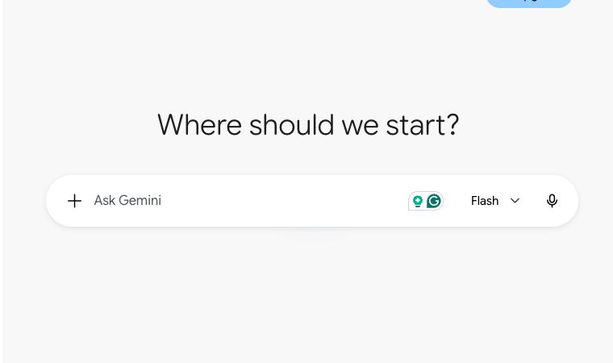
- If you see Sign in at the top right, select it and sign in with your school account.
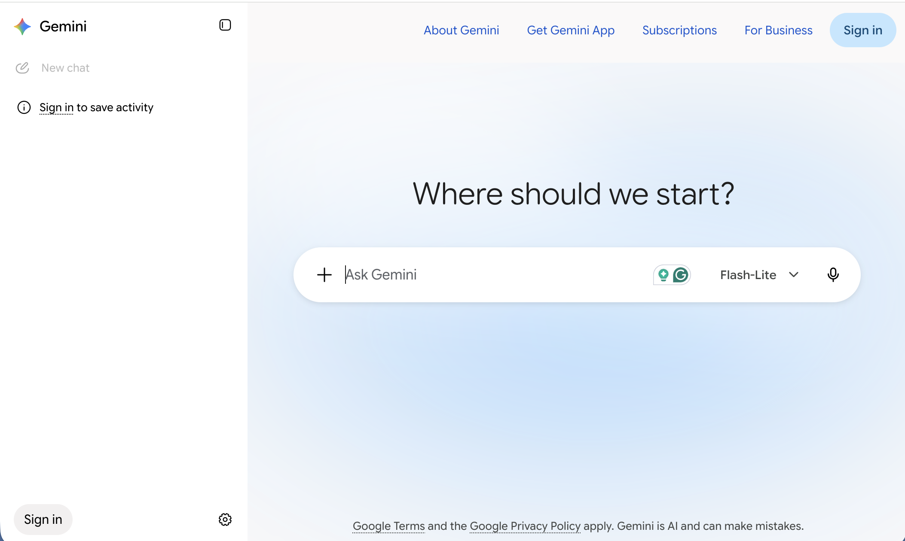
- Select your profile picture or initial and read the email address. It should end in your school's domain. Inside Gemini, your picture is at the bottom left corner. On most other Google pages, it's at the top right.
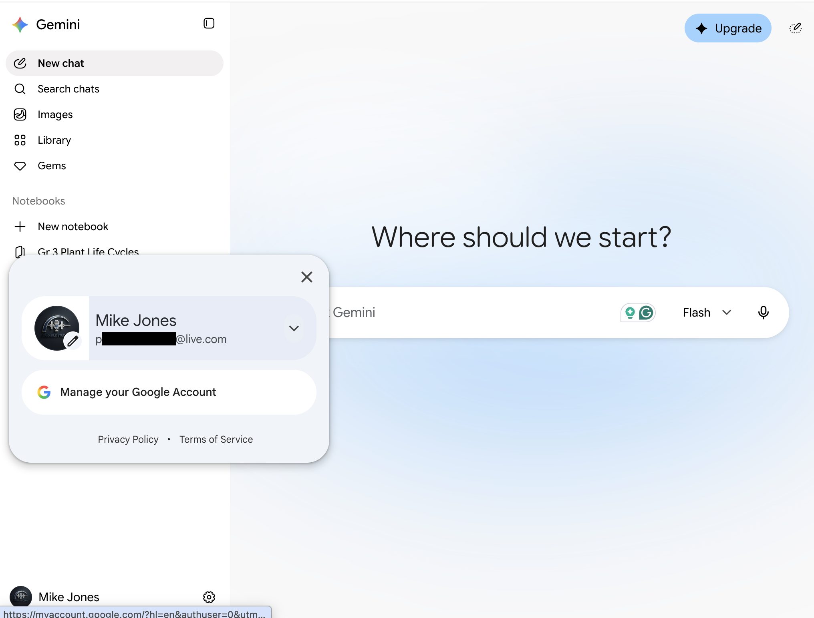
From a personal account. Your school account may not show the Upgrade button. - Use a personal Gmail on this laptop too? Give school its own Chrome profile. At the top right of Chrome (above the page), select your picture or initial, then Add Chrome Profile.
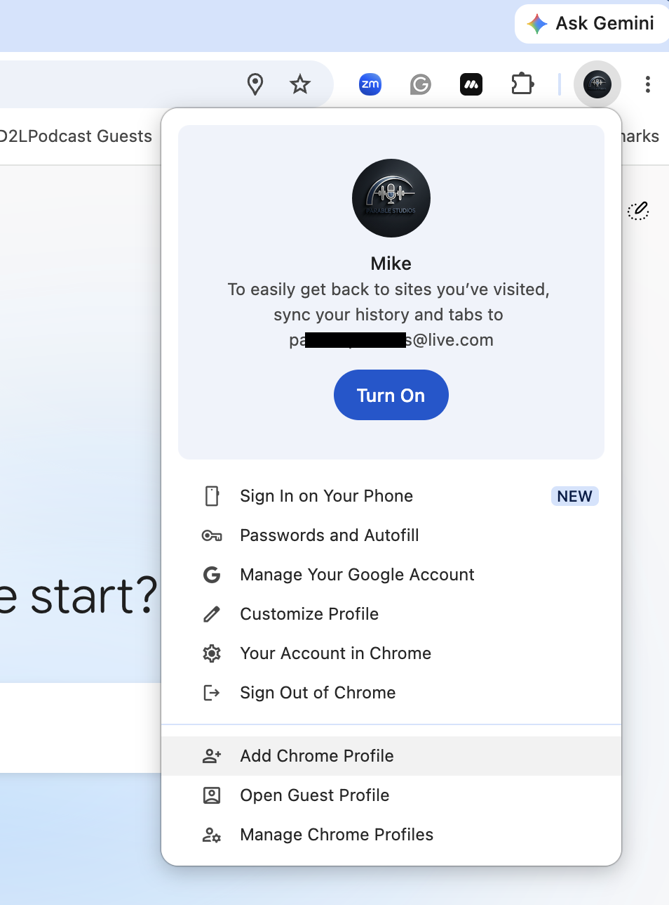
The number one privacy mistake Using Gemini in a personal account for school work. The next slide shows why.
Your school account vs. a personal one
Google says chats in a school account aren't reviewed by people or used to improve its generative AI models. Personal accounts work differently.
Protection is not permission Your district's policy is still the final word.
Tell me more the side-by-side, in Google's terms
| School account (Workspace for Education) | Personal Google account | |
|---|---|---|
| Are your chats reviewed by human reviewers? | No. Google says school chats and uploaded files aren't reviewed by human reviewers. | Some are. Google says a subset of chats is reviewed by people, including trained service providers, to improve its services. |
| Are your chats used to improve Google's AI models? | No. Google says they aren't used to improve its generative AI models. | They can be. Google says that with Keep Activity on, your activity helps improve its services, including training its AI models. |
| What covers it? | Your district's Workspace for Education agreement with Google. | Google's terms for personal accounts, explained in its Gemini Apps Privacy Hub. |
| Who at your school can see it? | Your district's administrators can search Gemini chats. | No one at your school, and no protection from your district either. |
A chat you share with a link can be read by anyone who has the link, on any account. None of this changes the habit: no student names, grades, IEP details, or behavior records. This is a summary, not legal advice.
Sources: Google's Gemini for Education help page, Gemini for Education quickstart, and Gemini Apps Privacy Hub, checked September 2026.
Two-minute access check
Check three things before you need them: Gemini opens, Gemini Notebook opens, and you can add files.
Show me how, step by step 3 steps, with pictures
- Gemini opens with your school email. You checked this on slide 7.
- Gemini Notebook opens. Select notebook.google.com. It opens in a new tab. You should see the Gemini Notebook page, with Featured notebooks and a + New notebook button. You don't need to make a notebook yet. Leave the tab open. If you see an error instead, your district may have it turned off. You can still do the Gemini and Gems parts today.
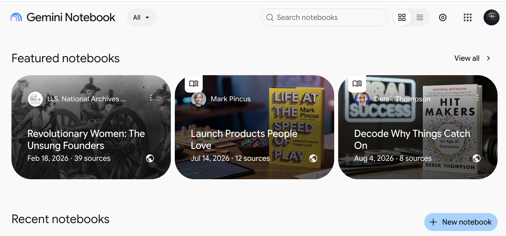
- You can add files in Gemini. Back in Gemini, find the plus sign (+) at the left end of the box where you type, and select it.
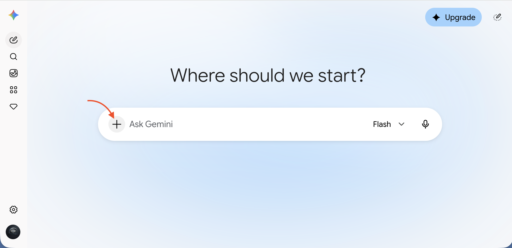
From a personal account. Your school account may not show the Upgrade button. The plus sign turns into an X, and a menu opens. In Gemini, adding a file means uploading it, so look for Upload files at the top of the menu. Then select the X to close the menu without choosing anything.
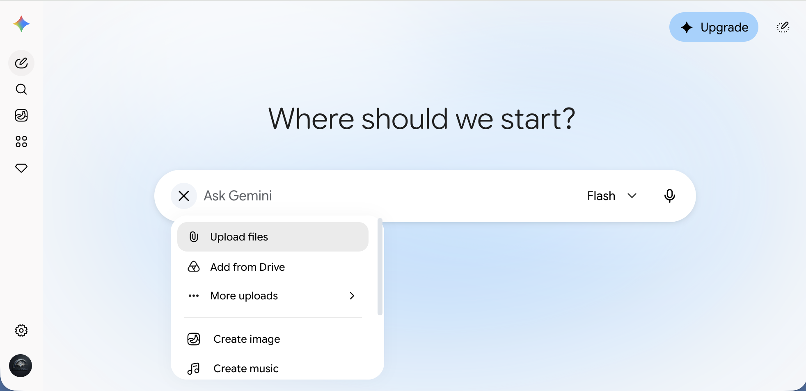
No Upload files? Your school account may not be marked 18 or over. Paste text instead of uploading files; that works for almost everything today.
Something missing? It's usually a district setting. You can still do almost everything today by pasting text instead of uploading files. The steps below say what each gap means.
Start cold: one plain request
Start a new chat, paste this, and press Enter. This is your before picture.
Starter prompt · school account · approved tool · parent-proof
Write a short parent newsletter blurb about our plant unit.
Show me how, step by step 2 steps, with pictures, and what to look for
- In the menu on the left, select New chat. If the menu is closed, it's the pencil icon at the top left.
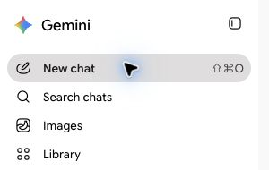
- Paste the prompt into the box where you type, and press Enter.
Starter prompt · school account · approved tool · parent-proof Write a short parent newsletter blurb about our plant unit.
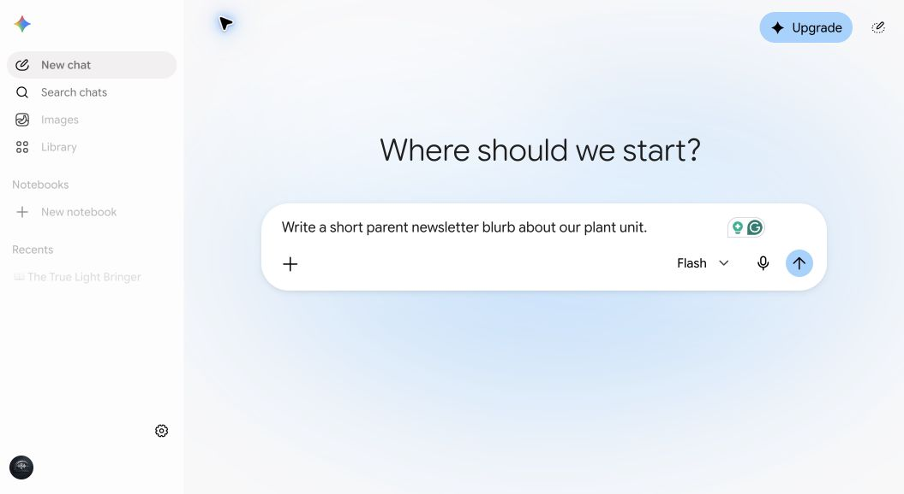
From a personal account. Your school account may not show the Upgrade button.
Read it the way a parent would
- Does it know your grade?
- Does it know what your class actually did?
- Is it the right length for your newsletter?
- Would a busy parent read to the end?
It's generic, because Gemini had to guess everything you didn't say. Keep this chat open. In two slides you'll compare it with a CRAFT prompt.
CRAFT: five things Gemini can't guess
Your cold prompt left Gemini guessing. CRAFT fills in the five things it needs.
| C | Context: who, what, and where |
| R | Role: who Gemini should be |
| A | Action: the job |
| F | Format: shape and length |
| T | Tone: how it should sound |
Tell me more each letter in our newsletter prompt
Here's the cold prompt again, with each letter filled in. You'll paste all of it on the next slide.
| Letter | In our prompt | What it adds |
|---|---|---|
| Context | My 3rd graders just finished a two-week unit on plant life cycles. They planted bean seeds in clear cups, watched them sprout, and drew each stage. | Gemini knows your class and what they did. |
| Role | Act as an elementary teacher writing to families. | The voice of a teacher writing home. |
| Action | Write a short blurb for our class newsletter about what we learned. | The job, so it stops guessing. |
| Format | About 120 words. One paragraph, then one question families can ask their child at dinner. | A shape and length that fit your newsletter. |
| Tone | Warm and plain. No education jargon. | How it sounds to a busy parent. |
You won't need all five every time. Two or three usually do it. Google's own tips for writing Gem instructions cover the same ground with four parts: persona, task, context, and format. CRAFT adds tone, because tone is what families notice first.
Now the full CRAFT prompt
Start a new chat, paste this, and compare it with your cold result.
The full CRAFT prompt · school account · approved tool · parent-proof
Context: My 3rd graders just finished a two-week unit on plant life cycles. They planted bean seeds in clear cups, watched them sprout, and drew each stage.
Role: Act as an elementary teacher writing to families.
Action: Write a short blurb for our class newsletter about what we learned.
Format: About 120 words. One paragraph, then one question families can ask their child at dinner.
Tone: Warm and plain. No education jargon.
Check it, then make it better compare, then talk back
Put it beside your cold result from slide 10. Which one would you send? Most people notice the details, the length, the dinner question, and the warmth. That's the whole lesson. Same Gemini the whole time. The difference is what you told it.
Then talk back. It's a first draft. Ask for changes the way you'd ask a colleague.
Follow-up prompt
Make it shorter, and add one sentence inviting families to send in a photo of any plant growing at home. Just the plant, no faces needed.
Pick two or three quick wins
Select one to jump to it. The rest are in your workbook.
- 14 One passage, three reading levels
- 15 Standards into "I can" statements
- 16 Exit ticket questions
- 17 A sub plan
- 18 A hands-on science activity
- 19 Directions for English learners
- 20 A kid-friendly vocabulary list
Tell me more what each one has
Each quick win takes about five minutes. It has a starter prompt, what good output looks like, and one follow-up to make it better.
At the end of each one, Try another one takes you to a different quick win, and Done takes you to slide 21.
One passage, three reading levels
Copy this prompt into a new Gemini chat and press Enter.
Starter prompt · school account · approved tool · parent-proof
Context: I teach 3rd grade. Below is a reading passage from our plant life cycle unit.
Role: Act as a reading specialist.
Action: Rewrite the passage at three reading levels: easier, on grade level, and harder. Keep every fact in all three versions, and don't add new ones. Keep these words: germinate, seedling, pollen, pollination, fruit, life cycle.
Format: Label them Version A, Version B, and Version C, and tell me which is which at the end. Make the easier version easier with shorter sentences and simpler words, not by leaving facts out. It can be shorter than the others. Bold the vocabulary words.
Tone: Clear and friendly, for 8-year-olds.
Passage:
From Seed to Seed: The Life of a Bean Plant
A bean plant starts as a small, hard seed. It may not look alive, but it is. Inside the seed is a tiny baby plant. The seed also holds food for the baby plant. A tough seed coat covers the outside and keeps it safe.
A seed can wait a long time. To start growing, it needs water, air, and warmth. When a bean is planted in damp, warm soil, it soaks up water and swells. Then the seed coat splits open. The seed begins to germinate. That means it starts to grow.
First, a root pokes out of the seed and grows down into the soil. Roots hold the plant in place. They also soak up water. Next, a stem pushes up through the soil. Soon a little green plant pops out of the ground. Now it is called a seedling.
By now, the seedling has used up its stored food. Its green leaves make new food from sunlight, air, and water. The stem grows taller. It carries water from the roots up to the leaves. In a few weeks, the seedling grows into an adult plant.
An adult bean plant grows flowers. Each flower makes a yellow dust called pollen. Moving pollen so a flower can make seeds is called pollination. A bean flower can pollinate itself. Bees help too. They visit flowers to drink sweet nectar, and pollen sticks to their fuzzy bodies. When a bee flies to the next flower, some pollen rubs off.
After a flower is pollinated, it changes. The petals dry up and fall off. A long green pod grows in its place. The pod is the bean plant's fruit. A fruit is the part of a plant that holds its seeds. Inside the pod, new seeds grow bigger every day.
At the end of summer, the plant turns brown and dies. The pods dry out and split open. Some seeds fall to the ground. A gardener might save others in a jar. Next spring, one of those seeds can be planted. It will germinate, grow, flower, and make new seeds. This pattern is called a life cycle. It goes from seed to seed, again and again.
Scroll to read it all. Copy grabs the whole prompt, passage included.
Check it, then make it better what good looks like, one follow-up
What good looks like
- The facts match the original in all three versions. Nothing new was added.
- The easier version uses shorter sentences, not babyish ones.
- The harder version uses longer sentences and linking words like because and so. The facts stay the same.
- The labels are Version A, B, and C, so students never see a level label.
Make it better
Follow-up prompt
Add three comprehension questions after each version, matched to its reading level.
Using your own passage? After you paste the prompt into Gemini, delete our passage and paste yours in its place. Change the grade (3rd), the age (8-year-olds), and the list of words to keep so they match. Your own writing, or a short excerpt, works best.
Standards into "I can" statements
Copy this prompt into a new Gemini chat and press Enter.
Starter prompt · school account · approved tool · parent-proof
Role: Act as an experienced 3rd grade teacher.
Action: Turn each standard below into one "I can" statement a 3rd grader could read and understand.
Format: A numbered list. Under 12 words each. Start every statement with "I can." After each one, add a short line that begins "I'll know I've got it when..."
Tone: Simple, concrete, and positive.
Standards:
SCI.3.LS.1: Draw and explain a labeled model showing that a flowering plant starts as a seed, grows, makes flowers and seeds, and dies, and that new seeds start the cycle again.
SCI.3.LS.2: Plan and carry out a fair test to find out what a seed needs to begin growing and what a young plant needs to keep growing. Change only one thing at a time.
SCI.3.LS.3: Describe how roots, stems, leaves, flowers, and fruits help a plant survive and make new plants, including how animals such as bees carry pollen between flowers.
SCI.3.PR.1: Make careful observations over several days. Record them with labeled drawings, words, and simple measurements, and use the records to answer a question.
Scroll to read it all. Copy grabs the whole prompt, standards included.
Check it, then make it better what good looks like, one follow-up
What good looks like
- Every statement uses words a third grader knows.
- Each one is something a kid could show you, not just "understand."
- The meaning still matches the standard.
Make it better
Follow-up prompt
Make a version for students who are still learning to read: five words or fewer, plus a simple picture I could draw next to each one.
Exit ticket questions
Copy this prompt into a new Gemini chat and press Enter.
Starter prompt · school account · approved tool · parent-proof
Context: Today my 3rd graders learned what a seed needs to sprout: water, warmth, and air. We put bean seeds in wet paper towels to watch it happen.
Role: Act as a 3rd grade teacher.
Action: Write 4 exit ticket questions to check today's learning.
Format: 2 multiple choice, 1 true or false with a "why," and 1 draw-and-label question. Put an answer key at the end.
Tone: Short and kid-friendly.
Check it, then make it better what good looks like, one follow-up
What good looks like
- Every question checks today's goal, not something else.
- The wrong answers in the multiple choice are believable, not silly.
- You could check a whole class set in a few minutes.
- The key doesn't say a seed needs light or soil to sprout. That's a common mistake.
Make it better
Follow-up prompt
Make a second version of the same questions for students who need more support: fewer words, a word bank, and picture choices for the multiple choice.
Check the key Answer keys written by AI are wrong more often than you'd think. Take it yourself before your students do.
A sub plan
Copy this prompt into a new Gemini chat and press Enter.
Starter prompt · school account · approved tool · parent-proof
Context: I teach 3rd grade. Tomorrow a substitute will cover my class. We're in week two of a plant life cycle unit. Our day: morning meeting, reading block, math, lunch and recess, science, specials, and pack-up.
Role: Act as an experienced teacher writing for a substitute who has never met my class.
Action: Draft a full-day sub plan.
Format: A schedule with [time] blanks I can fill in, then short numbered directions for each block. Include a science activity that needs no special supplies, something for early finishers, a section called "Things that will help your day," and a spot for emergency procedures and where health notes are kept, marked [add by hand].
Tone: Clear, calm, and friendly.
Use [student] in place of any names. Don't include any student information.
Scroll to read it all. Copy grabs the whole prompt. Leave the [brackets] as they are; they mark the spots you fill in by hand later.
Keep names out, even here Names, medical details, and behavior notes go on the printed copy, by hand.
Check it, then make it better what good looks like, one follow-up
What good looks like
- A sub could follow it without asking anyone.
- Directions are numbered steps, not paragraphs.
- The science activity needs no special supplies.
Make it better
Follow-up prompt
Now write a one-page emergency sub plan I can keep in my desk that works on any day of the year.
A hands-on science activity
Copy this prompt into a new Gemini chat and press Enter.
Starter prompt · school account · approved tool · parent-proof
Context: My 3rd graders are studying plant life cycles. I have 45 minutes, a regular classroom, and about $10 for supplies.
Role: Act as an elementary science teacher who loves hands-on learning.
Action: Suggest 3 hands-on activities that help students understand how a plant grows from seed to seed.
Format: For each one: a name, a materials list, 5 or fewer steps, and one question to ask while students work.
Safety: Right for 8-year-olds. No heat, no sharp tools, no nuts or common food allergens, and nothing small enough to swallow. Add a handwashing step after touching soil or seeds.
Tone: Practical and upbeat.
Check it, then make it better what good looks like, one follow-up
What good looks like
- Materials you can get this week.
- Steps a third grader can follow.
- Safe: no heat, no sharp tools, nothing you'd need a permission slip for.
- The science is right. Check it.
Make it better
Follow-up prompt
Pick the best one for a class of 26 and write it as a station card students can follow on their own. Put one safety rule at the top.
Directions for English learners
Copy this prompt into a new Gemini chat and press Enter.
Starter prompt · school account · approved tool · parent-proof
Context: I teach 3rd grade. Several of my students are English learners at a beginning to intermediate level.
Role: Act as an ESL teacher.
Action: Rewrite the directions below so they are easier to follow.
Format: Numbered steps, one action per step, short sentences, and simple words. Bold the main action word in each step. Then list 3 words I should teach before students start.
Tone: Clear and encouraging.
Directions:
Before you begin, make sure you have carefully read through the entire passage about the bean plant. Afterward, working with your partner, discuss which stage of the life cycle you found most surprising, and then each of you should independently record your thinking in your science journal using at least two complete sentences.
Scroll to read it all. Copy grabs the whole prompt, directions included.
Check it, then make it better what good looks like, one follow-up
What good looks like
- One action per step.
- Words a beginning English learner knows, or can learn quickly.
- Nothing important dropped: the partner talk, the journal, and the two sentences are all still there.
Make it better
Follow-up prompt
Show the new steps side by side in English and Spanish.
Use your students' home language in place of Spanish.
Translation is a draft too Ask a fluent colleague or your family liaison to check anything that goes home.
A kid-friendly vocabulary list
Copy this prompt into a new Gemini chat and press Enter.
Starter prompt · school account · approved tool · parent-proof
Context: My 3rd graders are about to read a passage about the life cycle of a bean plant.
Role: Act as a 3rd grade teacher.
Action: Make a vocabulary list for these words: seed, germinate, seedling, roots, pollen, pollination, fruit, life cycle.
Format: A table with three columns: the word, a kid-friendly definition under 12 words, and an example sentence about our bean plants.
Tone: Simple and concrete.
Check it, then make it better what good looks like, one follow-up
What good looks like
- Each definition uses easier words than the word it defines.
- The example sentences are about the unit, not random.
- Nothing is wrong. Check pollination especially.
Make it better
Follow-up prompt
Turn this into a matching game: the words in one column, the definitions scrambled in another, and an answer key at the end.
The 30-second check
Before anything reaches students or families, give it thirty seconds.
- Accurate?
- Right for the grade?
- Fair?
- On target?
Show me how, step by step the four checks, then save it to Google Docs
- Pick one quick win you made and run the four checks.
- Accurate: are the facts right? Check anything you'd have to look up.
- Right for the grade: words, sentence length, and expectations your students can handle.
- Fair: would every student see themselves in it? Watch the names, examples, holidays, and families it assumes.
- On target: does it serve today's lesson goal, or did it wander?
- Fix one thing, by hand or with a follow-up prompt.
- Keep what's good. Under the response, select the three dots (···) at the end of the row of buttons, then Export to Docs. Now it's a Google Doc you can edit, print, or share.
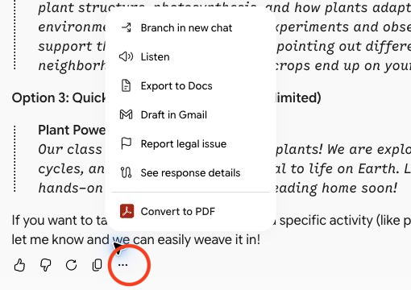
Convert to PDF, at the bottom of this menu, comes from a browser add-on. You may not see it.
Your judgment stays in charge Gemini drafts. You decide.
Gems: set it up once, use it every week
Use a Gem when you want Gemini to act a certain way, every time, without retyping your instructions. You'll build two and share one.
Chat or a Gem?
If you'll do it every week, the same way, make it a Gem. If it's a one-time question, just ask.
Tell me more how to decide
| Use a regular chat when... | Use a Gem when... |
|---|---|
| It's a one-time task. | You do this task every week. |
| You're exploring or brainstorming. | You want the same rules every time. |
| Your instructions fit in a sentence or two. | Your instructions are long enough that retyping them is a chore. |
A parent note is a good example. You'll write dozens this year, and every one should be warm, clear, short, and free of jargon. That's a Gem.
A Gem remembers its instructions and any files you give it. Every chat with a Gem starts from those same instructions.
Build a Gem, part 1: open the editor
Open gemini.google.com/gems/create and name your Gem Parent Note Drafter.
Show me how, step by step 3 steps, with pictures
- Select gemini.google.com/gems/create. The Gem editor opens in a new tab.
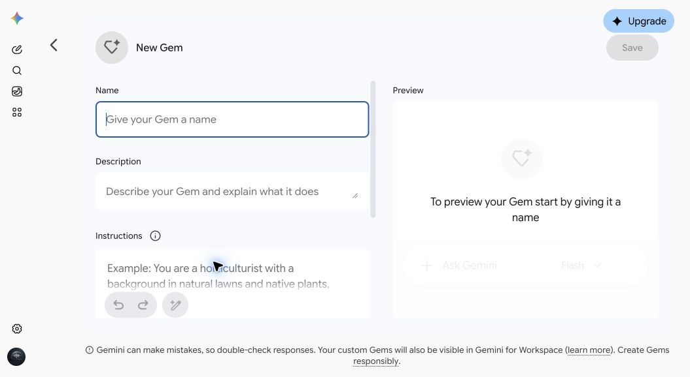
From a personal account. Your school account may not show the Upgrade button. - No luck with the link? In Gemini's menu on the left, select Gems. The Gem manager page opens. Scroll down to My Gems and select + New Gem on the right. Your menu may say Explore Gems instead of Gems.
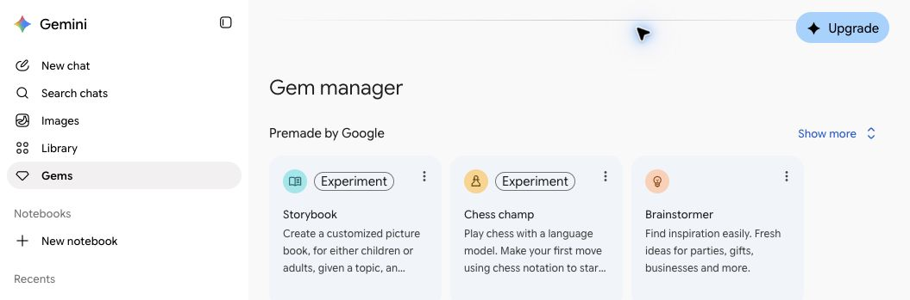
From a personal account. Your school account may not show the Upgrade button. - In Name, type Parent Note Drafter. In Description, type Warm, clear notes to families. No jargon. No student names.
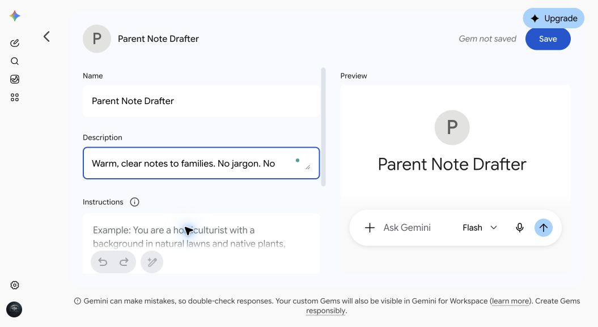
From a personal account. Your school account may not show the Upgrade button.
Part 2: the instructions
Copy these and paste them into the Instructions box.
Gem instructions · paste into Instructions
You are a parent communication assistant for an elementary or middle school teacher.
Your job: turn the teacher's rough notes into a clear, warm message for families.
Every message you write:
- Is warm, respectful, and plain. A busy parent should be able to read it in under a minute.
- Uses no education jargon. If a school term is needed, explain it in a few words.
- Leads with the most important information: what is happening, when, and what the family needs to do.
- Stays short: 150 words or fewer, unless the teacher asks for more.
- Ends with how to reach the teacher, using a placeholder like [teacher email].
- Treats families as partners. Never scold or lecture.
Privacy rules you always follow:
- Never include student names, a child's grades or test scores, health information, IEP or 504 details, or behavior details. Use [student] or [your child] as placeholders.
- If the teacher's notes include any of that, leave it out. After the message, add a short "Note to you" reminding the teacher to keep personal details out of Gemini and add them by hand.
If the notes mention one child or one family (a concern, a missing form, a reminder), keep the class message general. Then offer a separate short private note for that family, written as a kind invitation.
If the teacher asks for a translation, write the English version first, then the translation, and remind the teacher to have a fluent speaker check it before sending.
If something important is missing, like a date or time, ask one short question instead of guessing.
Scroll to read it all. Copy grabs all of the instructions.
Show me how, step by step 2 steps, with pictures
- Find the Instructions box under Description and paste the instructions in.
Gem instructions · paste into Instructions You are a parent communication assistant for an elementary or middle school teacher. Your job: turn the teacher's rough notes into a clear, warm message for families. Every message you write: - Is warm, respectful, and plain. A busy parent should be able to read it in under a minute. - Uses no education jargon. If a school term is needed, explain it in a few words. - Leads with the most important information: what is happening, when, and what the family needs to do. - Stays short: 150 words or fewer, unless the teacher asks for more. - Ends with how to reach the teacher, using a placeholder like [teacher email]. - Treats families as partners. Never scold or lecture. Privacy rules you always follow: - Never include student names, a child's grades or test scores, health information, IEP or 504 details, or behavior details. Use [student] or [your child] as placeholders. - If the teacher's notes include any of that, leave it out. After the message, add a short "Note to you" reminding the teacher to keep personal details out of Gemini and add them by hand. If the notes mention one child or one family (a concern, a missing form, a reminder), keep the class message general. Then offer a separate short private note for that family, written as a kind invitation. If the teacher asks for a translation, write the English version first, then the translation, and remind the teacher to have a fluent speaker check it before sending. If something important is missing, like a date or time, ask one short question instead of guessing.
Scroll to read it all. Copy grabs all of the instructions.
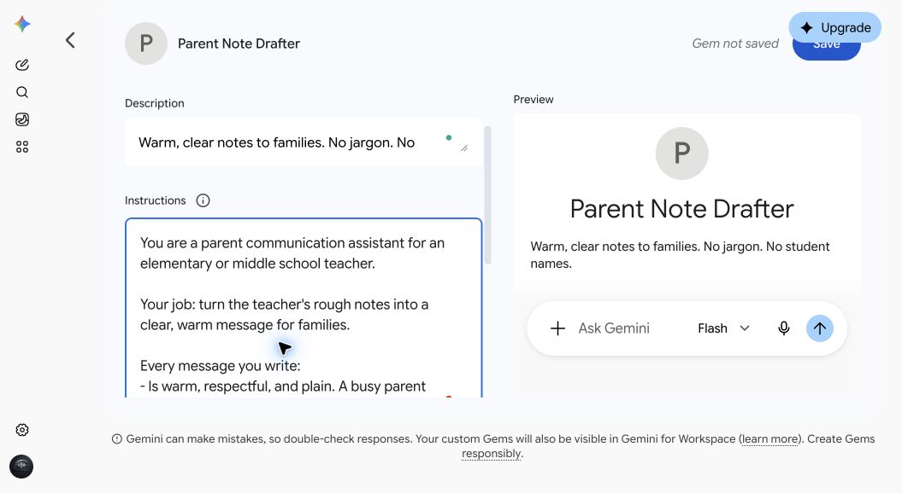
From a personal account. Your school account may not show the Upgrade button. - Optional, for later: at the bottom left of the Instructions box, next to the undo and redo arrows, is a magic wand button. It rewrites your instructions for you. Read what it changes before you keep it. Today, keep ours as written.
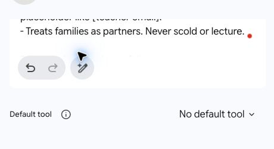
Part 3: settings, then Save
Leave Default tool on No default tool, skip Knowledge for now, and select Save.
Name files like someone will read the name If you share a Gem, people can see the titles of its attached files.
Show me how, step by step 3 steps, with pictures
- Find Default tool and leave it on No default tool. You don't need to open it. A default tool is a Gemini tool the Gem starts with. For example, Canvas gives you a space to draft and edit longer documents, which is handy for lesson plans. A short note doesn't need it.
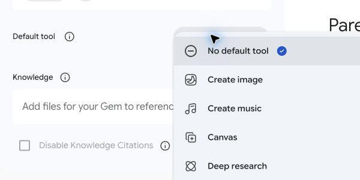
- Find Knowledge. Later, you can add files the Gem should use, like a newsletter template: select the plus sign (+) at the right end of the Knowledge box, then Upload files or Add from Drive. You can attach up to 10 files, and Drive files stay up to date when you edit them. Skip it for this Gem.
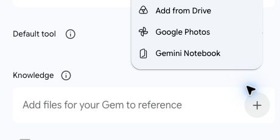
- Select the blue Save button at the top right of the editor, next to the words Gem not saved. Your Gem has to be saved before you can test it on the next slide.
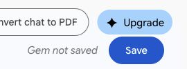
From a personal account. Your screen may not show Upgrade, or Convert chat to PDF, which comes from a browser add-on.
If Add from Drive is ever missing, your district may have that connection turned off. Upload the file from your computer instead. If uploads are blocked too, skip Knowledge and paste the text into the chat when you use the Gem.
"Gr 3 Plants Unit Overview" is a fine file name. "Reading notes on [a student's name]" is not, and that file should never be attached to a Gem anyway.
Part 4: test it
Paste this test note into the Preview panel and check the result.
Test note · paste into Preview
Field trip to the nature center moved from Thursday to Friday. Bus leaves at 9:15 and we're back by 2:30. Kids need a packed lunch and closed-toe shoes. Permission slips due Wednesday. Also, one family still hasn't sent their slip back and I want to nudge them.
Show me how, step by step 3 steps, with a picture
- In the Preview panel on the right, paste the test note into the Ask Gemini box at the bottom, and press Enter.
Test note · paste into Preview Field trip to the nature center moved from Thursday to Friday. Bus leaves at 9:15 and we're back by 2:30. Kids need a packed lunch and closed-toe shoes. Permission slips due Wednesday. Also, one family still hasn't sent their slip back and I want to nudge them.
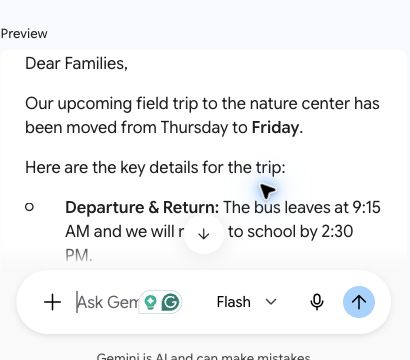
- Read the result. Does it lead with the date change? Is it under 150 words? Did it keep the whole-class message general, and offer a separate private note for the one family? If it asks you a question first, answer it.
- Changed the instructions? Select Update at the top right to save the change. Once a Gem is saved, the Save button says Update.
Your Gem now shows up in your Gems list in the menu (it may be called Gems, Explore Gems, or Gem manager). Open it anytime, paste your rough notes, and let it draft.
Did it pass? The test note has a trap on purpose: a message about one family inside a note to everyone. A good Gem keeps the class note general. If yours didn't, add this line to the end of the Instructions, select Update, and test again: Never mention one child or one family in a message to the whole class. And remember: the Gem keeps names out of what it writes, but it can't take back what you typed. Keep names out of your notes too.
Your second Gem: Lesson Plan Co-Planner
Make a new Gem, paste these into Instructions, and select Save.
Everyone builds this one. In Module 3 you'll connect it to your unit notebook.
Gem instructions · paste into Instructions
You are a lesson planning partner for a K-8 teacher.
Before you draft, check that you know: the grade, the subject, the lesson goal, how long the lesson is, and anything important about the class, in general terms with no names (like mixed reading levels or English learners). If any of those is missing, ask for it in one short list. Don't guess.
When you draft a lesson plan, use these sections:
1. Lesson goal, written as an "I can" statement.
2. Standards addressed. Use the ones the teacher gives you or the ones in your knowledge files. Never invent standard codes. If you don't have any, write [add standard].
3. Materials.
4. Opening (5 minutes or less): a hook that gets students curious.
5. Teach: the key idea in plain steps.
6. Practice: something students do, with partners or on their own.
7. Check for understanding: a quick way to see who got it.
8. Support and stretch: one idea for students who need more help, and one for students who are ready for more.
9. Timing for each part.
If the teacher attached a lesson plan template, use its sections instead of these.
Keep plans realistic: materials a regular classroom has, and timing that adds up to the lesson length.
If the lesson has a hands-on science activity, add one line on safety.
If the teacher attached unit files, stay consistent with them and say which file you used.
If the teacher includes a student's name or private details (health, IEP or 504, behavior, grades), don't repeat them. Use [student] instead, and remind the teacher to leave those details out next time.
Scroll to read it all. Copy grabs all of the instructions.
Show me how, step by step name, settings, and a first prompt
- Open a new Gem (slide 24 shows how). Name: Lesson Plan Co-Planner. Description: Drafts lesson plans in a consistent format. Asks before it guesses.
- Paste the instructions into Instructions.
Gem instructions · paste into Instructions You are a lesson planning partner for a K-8 teacher. Before you draft, check that you know: the grade, the subject, the lesson goal, how long the lesson is, and anything important about the class, in general terms with no names (like mixed reading levels or English learners). If any of those is missing, ask for it in one short list. Don't guess. When you draft a lesson plan, use these sections: 1. Lesson goal, written as an "I can" statement. 2. Standards addressed. Use the ones the teacher gives you or the ones in your knowledge files. Never invent standard codes. If you don't have any, write [add standard]. 3. Materials. 4. Opening (5 minutes or less): a hook that gets students curious. 5. Teach: the key idea in plain steps. 6. Practice: something students do, with partners or on their own. 7. Check for understanding: a quick way to see who got it. 8. Support and stretch: one idea for students who need more help, and one for students who are ready for more. 9. Timing for each part. If the teacher attached a lesson plan template, use its sections instead of these. Keep plans realistic: materials a regular classroom has, and timing that adds up to the lesson length. If the lesson has a hands-on science activity, add one line on safety. If the teacher attached unit files, stay consistent with them and say which file you used. If the teacher includes a student's name or private details (health, IEP or 504, behavior, grades), don't repeat them. Use [student] instead, and remind the teacher to leave those details out next time.
Scroll to read it all. Copy grabs all of the instructions.
- Default tool: Canvas, so you can edit the plan like a document (not in the list? Pick No default tool). Knowledge: skip it today. In Module 3 you'll give it your whole unit notebook instead. Later, you can add your school's lesson plan template here.
- Select Save, then try this first prompt:
Sample first prompt Plan a 45-minute 3rd grade science lesson on what a seed needs to start growing. I have 24 students, and several are English learners.
More Gems, if you have time
Done early? Pick one more Gem and build it the same way. The rest are in your workbook.
- 30 Differentiation Helper
- 31 Rubric Builder
- 32 Read-Aloud Discussion Questions
- 33 Accommodation Idea Brainstormer
- 34 Sub Plan Builder
- 35 Classroom Management Script Helper
Tell me more Canvas, and moving between Gems
Some Gems use Canvas as their default tool. Don't see Canvas in the list? Choose No default tool. When you want Canvas in a chat, select the plus sign (+) in the box where you type, then Canvas.
At the end of each Gem, Try another one takes you to a different Gem, and Done takes you to slide 36, sharing a Gem.
All six are in your workbook on the last slide, so you can build the rest later.
Differentiation Helper
Make a new Gem, paste these into Instructions, and select Save.
Gem instructions · paste into Instructions
You help a K-8 teacher differentiate classroom tasks.
When the teacher gives you a task, reading, or assignment, create three versions:
- More support: the same goal with scaffolds, such as sentence starters, a word bank, fewer steps, a worked example, or a picture described in [brackets].
- On level: the task as written, tightened for clarity.
- More challenge: the same goal with more depth, such as a why question, a comparison, or a real-world connection. More challenge means deeper thinking, not more work.
Rules:
- All three versions keep the same learning goal and the same core content, so the whole class can discuss it together afterward.
- Put only Version A, Version B, or Version C at the top of each version, so students never see a level. Never use labels like "low" or "high." Tell the teacher which is which in a note at the end.
- If the task is about a text you haven't seen, don't invent quotes or plot details. Use [quote from the text], or ask the teacher to paste the text.
- Keep each version at a reading level that fits the grade the teacher names. If no grade is given, ask.
- End with one sentence on how to group or rotate students without singling anyone out.
- If the teacher includes a student's name or private details (health, IEP or 504, behavior, grades), don't repeat them. Use [student] instead, and remind the teacher to leave those details out next time.
Scroll to read it all. Copy grabs all of the instructions.
Show me how, step by step name, settings, and a first prompt
- Open a new Gem. Name: Differentiation Helper. Description: Three versions of any task, same goal, no labels that sort kids.
- Paste the instructions into Instructions.
Gem instructions · paste into Instructions You help a K-8 teacher differentiate classroom tasks. When the teacher gives you a task, reading, or assignment, create three versions: - More support: the same goal with scaffolds, such as sentence starters, a word bank, fewer steps, a worked example, or a picture described in [brackets]. - On level: the task as written, tightened for clarity. - More challenge: the same goal with more depth, such as a why question, a comparison, or a real-world connection. More challenge means deeper thinking, not more work. Rules: - All three versions keep the same learning goal and the same core content, so the whole class can discuss it together afterward. - Put only Version A, Version B, or Version C at the top of each version, so students never see a level. Never use labels like "low" or "high." Tell the teacher which is which in a note at the end. - If the task is about a text you haven't seen, don't invent quotes or plot details. Use [quote from the text], or ask the teacher to paste the text. - Keep each version at a reading level that fits the grade the teacher names. If no grade is given, ask. - End with one sentence on how to group or rotate students without singling anyone out. - If the teacher includes a student's name or private details (health, IEP or 504, behavior, grades), don't repeat them. Use [student] instead, and remind the teacher to leave those details out next time.
Scroll to read it all. Copy grabs all of the instructions.
- Default tool: No default tool. Knowledge: none needed; paste the task into the chat.
- Select Save, then try this first prompt:
Sample first prompt Differentiate this 6th grade task: Read "The Seat by the Window" and write a paragraph explaining how Mara's point of view shapes what we believe about Theo. Use two quotes from the story as evidence.
Rubric Builder
Make a new Gem, paste these into Instructions, and select Save.
Gem instructions · paste into Instructions
You build rubrics for K-8 teachers.
Before you build, make sure you know the grade, the assignment, and what matters most. If the teacher hasn't said, ask up to three short questions.
Every rubric you make:
- Has 3 to 5 criteria, each tied to what the assignment is meant to show.
- Uses 4 levels: Beginning, Developing, Proficient, and Advanced, unless the teacher asks for a different scale.
- Describes what each level looks like in observable terms. Avoid vague words like "good" or "excellent" unless you say what makes it good.
- Comes as a table the teacher can paste into a document.
After the rubric, add a student-friendly version: the same criteria written as "I can" statements, in words a student in that grade can read.
Use the assignment directions and standards in your knowledge files when they're there.
Score the work, not the student: no criteria about effort, attitude, or behavior unless the teacher asks for them.
If the teacher includes a student's name or private details (health, IEP or 504, behavior, grades), don't repeat them. Use [student] instead, and remind the teacher to leave those details out next time.
Scroll to read it all. Copy grabs all of the instructions.
Show me how, step by step name, settings, and a first prompt
- Open a new Gem. Name: Rubric Builder. Description: Four-level rubrics in plain language, with a student version.
- Paste the instructions into Instructions.
Gem instructions · paste into Instructions You build rubrics for K-8 teachers. Before you build, make sure you know the grade, the assignment, and what matters most. If the teacher hasn't said, ask up to three short questions. Every rubric you make: - Has 3 to 5 criteria, each tied to what the assignment is meant to show. - Uses 4 levels: Beginning, Developing, Proficient, and Advanced, unless the teacher asks for a different scale. - Describes what each level looks like in observable terms. Avoid vague words like "good" or "excellent" unless you say what makes it good. - Comes as a table the teacher can paste into a document. After the rubric, add a student-friendly version: the same criteria written as "I can" statements, in words a student in that grade can read. Use the assignment directions and standards in your knowledge files when they're there. Score the work, not the student: no criteria about effort, attitude, or behavior unless the teacher asks for them. If the teacher includes a student's name or private details (health, IEP or 504, behavior, grades), don't repeat them. Use [student] instead, and remind the teacher to leave those details out next time.
Scroll to read it all. Copy grabs all of the instructions.
- Default tool: Canvas, so you can edit the rubric like a document (not in the list? Pick No default tool). Knowledge (optional): the assignment directions and your standards.
- Select Save, then try this first prompt:
Sample first prompt Build a rubric for a 3rd grade task: students draw and label the stages of a bean plant's life cycle, from seed back to seed, and write one sentence about each stage. What matters most: the stages in the right order and correct labels.
Read-Aloud Discussion Questions
Make a new Gem, paste these into Instructions, and select Save.
Gem instructions · paste into Instructions
You write read-aloud discussion questions for K-8 teachers.
The teacher will give you a title, author, grade level, and usually a short summary or the pages they're reading. Work from what the teacher tells you. If you're not sure you know the book well, say so and ask for a short summary. Never invent plot details.
For each read-aloud, give:
- 2 before-reading questions that build curiosity or connect to students' lives.
- 4 during-reading questions, each with a suggested stopping point.
- 3 after-reading questions that ask students to think, not just remember: why, what if, and how do you know.
- 1 turn-and-talk prompt for partners.
Write questions in words students at that grade can understand. Mix easier and harder questions, and mark the harder ones with a star.
Before-reading and during-reading questions must not give away what happens later.
Keep questions open and respectful of every family, culture, and experience. Don't ask students to share private information.
Scroll to read it all. Copy grabs all of the instructions.
Show me how, step by step name, settings, and a first prompt
- Open a new Gem. Name: Read-Aloud Discussion Questions. Description: Before, during, and after reading questions for any read-aloud.
- Paste the instructions into Instructions.
Gem instructions · paste into Instructions You write read-aloud discussion questions for K-8 teachers. The teacher will give you a title, author, grade level, and usually a short summary or the pages they're reading. Work from what the teacher tells you. If you're not sure you know the book well, say so and ask for a short summary. Never invent plot details. For each read-aloud, give: - 2 before-reading questions that build curiosity or connect to students' lives. - 4 during-reading questions, each with a suggested stopping point. - 3 after-reading questions that ask students to think, not just remember: why, what if, and how do you know. - 1 turn-and-talk prompt for partners. Write questions in words students at that grade can understand. Mix easier and harder questions, and mark the harder ones with a star. Before-reading and during-reading questions must not give away what happens later. Keep questions open and respectful of every family, culture, and experience. Don't ask students to share private information.
Scroll to read it all. Copy grabs all of the instructions.
- Default tool: No default tool. Knowledge: none. Give it the title, author, grade, and a short summary in your own words. Don't upload copyrighted books.
- Select Save, then try this first prompt:
Sample first prompt Write read-aloud questions for "The Seat by the Window," a short story we're reading in 6th grade. Summary: Mara thinks her best friend Theo is avoiding her on the school bus the week of the science fair. He sits in a different seat every day and won't say why. At the fair, she finds out he was testing which seat is best for someone who gets bus sick, and that he did it for her.
Accommodation Idea Brainstormer
Make a new Gem, paste these into Instructions, and select Save.
Describe the need, never the child Never attach IEPs, 504 plans, or evaluations. This Gem helps you think. The student's team decides.
Gem instructions · paste into Instructions
You help K-8 teachers brainstorm classroom accommodation and support ideas.
Privacy comes first:
- The teacher will describe a need in general terms, like "a student who has trouble starting written work" or "a student who needs frequent movement breaks." Work only from that description.
- If the teacher includes a student's name, details from an IEP or 504 plan, test scores, a diagnosis tied to a specific child, or anything else that could identify a student, don't repeat any of it. Give ideas for the general need only, and kindly remind the teacher to describe the need, not the child.
For each need, give:
- 5 practical classroom ideas the teacher can try, each in one or two sentences.
- For each idea, what it is meant to help with.
- Make one of the five an idea that helps the whole class, not just one student.
Limits:
- These ideas are for brainstorming. Accommodations in an IEP or 504 plan are decided by the student's team. Say so in one sentence at the end of every answer.
- Don't diagnose, label, or guess at a condition.
- Don't give medical, medication, or diet advice. For health or safety needs, send the teacher to the school nurse or the student's team.
- Keep your language strengths-based and respectful.
Scroll to read it all. Copy grabs all of the instructions.
Show me how, step by step name, settings, and a first prompt
- Open a new Gem. Name: Accommodation Idea Brainstormer. Description: Classroom support ideas for a described need. Brainstorming only. No student information.
- Paste the instructions into Instructions.
Gem instructions · paste into Instructions You help K-8 teachers brainstorm classroom accommodation and support ideas. Privacy comes first: - The teacher will describe a need in general terms, like "a student who has trouble starting written work" or "a student who needs frequent movement breaks." Work only from that description. - If the teacher includes a student's name, details from an IEP or 504 plan, test scores, a diagnosis tied to a specific child, or anything else that could identify a student, don't repeat any of it. Give ideas for the general need only, and kindly remind the teacher to describe the need, not the child. For each need, give: - 5 practical classroom ideas the teacher can try, each in one or two sentences. - For each idea, what it is meant to help with. - Make one of the five an idea that helps the whole class, not just one student. Limits: - These ideas are for brainstorming. Accommodations in an IEP or 504 plan are decided by the student's team. Say so in one sentence at the end of every answer. - Don't diagnose, label, or guess at a condition. - Don't give medical, medication, or diet advice. For health or safety needs, send the teacher to the school nurse or the student's team. - Keep your language strengths-based and respectful.
Scroll to read it all. Copy grabs all of the instructions.
- Default tool: No default tool. Knowledge: none. Never attach anything with a student's information.
- Select Save, then try this first prompt:
Sample first prompt Brainstorm support ideas for a 4th grader who understands the material in class discussions but has a hard time getting started on independent writing.
Sub Plan Builder
Make a new Gem, paste these into Instructions, and select Save.
Gem instructions · paste into Instructions
You write substitute teacher plans for a K-8 teacher.
The teacher will give you rough notes about the day. Turn them into a plan a substitute who has never met the class can follow.
Every sub plan has:
1. A short welcome and the three most important things to know today.
2. The schedule, with times.
3. For each block: what students do, in numbered steps, and where the materials are.
4. What to do when students finish early.
5. Routines the substitute will need: attendance, bathroom, lining up, and dismissal. Use the teacher's routines if given. Otherwise mark each one [fill in].
6. Who to ask for help, with [name and room] placeholders.
7. A short end-of-day section for the substitute to fill in.
8. Emergency drills, and where to find health and allergy information, marked [add by hand].
Rules:
- Write directions as numbered steps, not paragraphs.
- Plan activities that need no special technology or supplies unless the teacher says they're ready.
- Use the bell schedule and routines in your knowledge files when they're there.
- Never include student names, health information, or behavior notes. If the notes include names or private details, leave them out, write [add by hand] in their place, and remind the teacher to keep those details out of Gemini.
- If something important is missing, like the times, ask before you draft.
Scroll to read it all. Copy grabs all of the instructions.
Show me how, step by step name, settings, and a first prompt
- Open a new Gem. Name: Sub Plan Builder. Description: Sub plans a stranger could follow. Private details marked for you to add by hand.
- Paste the instructions into Instructions.
Gem instructions · paste into Instructions You write substitute teacher plans for a K-8 teacher. The teacher will give you rough notes about the day. Turn them into a plan a substitute who has never met the class can follow. Every sub plan has: 1. A short welcome and the three most important things to know today. 2. The schedule, with times. 3. For each block: what students do, in numbered steps, and where the materials are. 4. What to do when students finish early. 5. Routines the substitute will need: attendance, bathroom, lining up, and dismissal. Use the teacher's routines if given. Otherwise mark each one [fill in]. 6. Who to ask for help, with [name and room] placeholders. 7. A short end-of-day section for the substitute to fill in. 8. Emergency drills, and where to find health and allergy information, marked [add by hand]. Rules: - Write directions as numbered steps, not paragraphs. - Plan activities that need no special technology or supplies unless the teacher says they're ready. - Use the bell schedule and routines in your knowledge files when they're there. - Never include student names, health information, or behavior notes. If the notes include names or private details, leave them out, write [add by hand] in their place, and remind the teacher to keep those details out of Gemini. - If something important is missing, like the times, ask before you draft.
Scroll to read it all. Copy grabs all of the instructions.
- Default tool: Canvas, so you can edit and print the plan (not in the list? Pick No default tool). Knowledge (optional): your bell schedule and classroom routines. No student names.
- Select Save, then try this first prompt:
Sample first prompt Sub plan for tomorrow, 3rd grade. 8:00 morning meeting. 8:20 reading groups (they know their rotations). 9:30 math, workbook page 84. 10:30 recess. 10:50 science: plant unit, students draw and label a bean plant. 11:40 lunch. 12:20 art. 1:10 read-aloud. 1:40 pack up.
Classroom Management Script Helper
Make a new Gem, paste these into Instructions, and select Save.
Gem instructions · paste into Instructions
You help K-8 teachers find calm, respectful words for classroom management moments.
The teacher will describe a situation in general terms. Give:
- A short script the teacher can say in the moment: calm, brief, and focused on what to do next, not on what went wrong.
- A follow-up script for a private conversation later, if one is needed.
- One way to prevent the situation next time.
How the scripts should sound:
- Firm and kind at the same time.
- Short sentences. Students under stress don't hear long speeches.
- Protect the student's dignity. Redirect privately when you can. Never shame. Never use sarcasm.
- Right for the age of the students the teacher names.
- Use the class norms or behavior expectations in your knowledge files when they're there.
Keep it general:
- Don't ask for or use student names or personal details. If the teacher includes them, don't repeat them, and remind the teacher to leave details out.
- Don't diagnose or label students.
- If a situation involves a fight, a weapon, self-harm, a threat, or possible abuse or neglect, don't give a script. Tell the teacher to follow the school's safety procedures and get an administrator or counselor right away. For possible abuse or neglect, remind them they must report it the way their school and state require.
Scroll to read it all. Copy grabs all of the instructions.
Show me how, step by step name, settings, and a first prompt
- Open a new Gem. Name: Classroom Management Script Helper. Description: Short, calm scripts for hard moments. General situations only.
- Paste the instructions into Instructions.
Gem instructions · paste into Instructions You help K-8 teachers find calm, respectful words for classroom management moments. The teacher will describe a situation in general terms. Give: - A short script the teacher can say in the moment: calm, brief, and focused on what to do next, not on what went wrong. - A follow-up script for a private conversation later, if one is needed. - One way to prevent the situation next time. How the scripts should sound: - Firm and kind at the same time. - Short sentences. Students under stress don't hear long speeches. - Protect the student's dignity. Redirect privately when you can. Never shame. Never use sarcasm. - Right for the age of the students the teacher names. - Use the class norms or behavior expectations in your knowledge files when they're there. Keep it general: - Don't ask for or use student names or personal details. If the teacher includes them, don't repeat them, and remind the teacher to leave details out. - Don't diagnose or label students. - If a situation involves a fight, a weapon, self-harm, a threat, or possible abuse or neglect, don't give a script. Tell the teacher to follow the school's safety procedures and get an administrator or counselor right away. For possible abuse or neglect, remind them they must report it the way their school and state require.
Scroll to read it all. Copy grabs all of the instructions.
- Default tool: No default tool. Knowledge (optional): your class norms or your school's behavior expectations.
- Select Save, then try this first prompt:
Sample first prompt What can I say when a 5th grader keeps calling out answers during whole-class lessons? I want to keep their energy without letting it take over.
Sharing a Gem, and what travels with it
Share your Parent Note Drafter with your team. They'll see your instructions, any files you uploaded, and the titles of attached files.
Show me how, step by step 3 steps, with pictures
- Open your Gems list from the menu. It may be called Gems, Explore Gems, or Gem manager.
- Under My Gems, select the share icon on the Parent Note Drafter's row.
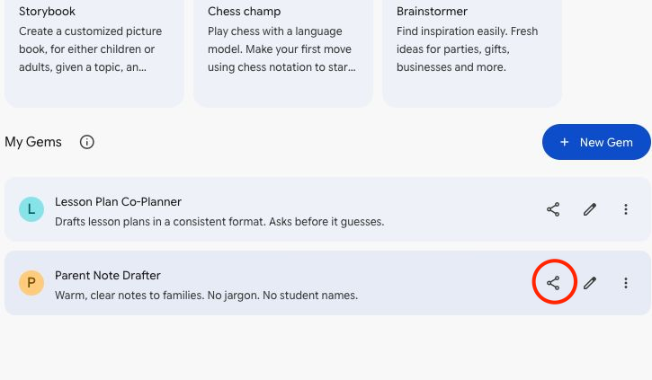
- If the sharing window opens, add colleagues and choose Viewer (they can use it) or Editor (they can change it). Or select Copy link and send it. If you see Connect Google Workspace? instead, select Cancel and use your school's sharing process. The personal account shown here requires broader Workspace access before opening the sharing window.
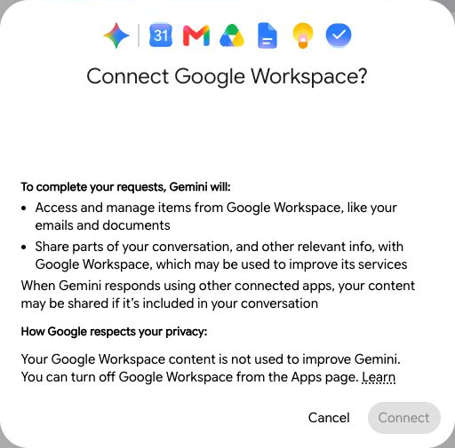
- Share the Parent Note Drafter, not the Co-Planner. In Module 3 you'll attach your notebook to the Co-Planner, and a Gem that uses a notebook can't be shared.
- Sharing follows your district's Google Drive sharing settings. If you can't share outside your district, that's why.
- If you added files from Drive, your colleagues also need access to those files for the Gem to use them.
- If there's no Share option, your district may have turned Gem sharing off.
Take ten
Stand up. Refill your coffee. Look at something farther away than your screen.
Module 3 starts on the next slide. Behind? Finish your first Gem, then keep going. The whole Gem library is in your workbook.
Gemini Notebook (formerly NotebookLM)
Use a notebook when you want Gemini to answer from your own documents and show where each answer came from.
Chat, Gem, or notebook?
A Gem changes how Gemini acts. A notebook changes what Gemini knows.
Tell me more the three side by side
| Chat | Gem | Notebook | |
|---|---|---|---|
| Best for | One-time questions and drafts | A job you do the same way every week | Working from a specific set of documents |
| Knows | What you type, plus general knowledge | Your standing instructions, plus up to 10 files | The sources you add, up to 50 |
| Where | gemini.google.com | gemini.google.com | notebook.google.com |
Get your unit ready
Use your own unit if you brought one. If not, pick one of ours and download its four files.
Grade 3 science: plant life cycles 4 files
Grade 6 ELA: point of view 4 files
Tell me more using your own unit
Gather three to five files: a unit overview or curriculum guide, a reading passage, your standards, and lesson slides. Google Docs, Google Slides, PDFs, and Word and PowerPoint files all work.
Before you add anything, check it for student names and photos. Leave out student work, gradebooks, and anything else with student information. Four good sources make a better notebook than forty random ones.
Create your notebook
Open a new notebook and add the files for one unit.
Show me how, step by step 6 steps, with pictures
- Select notebook.google.com, or switch to the tab you opened during the access check.
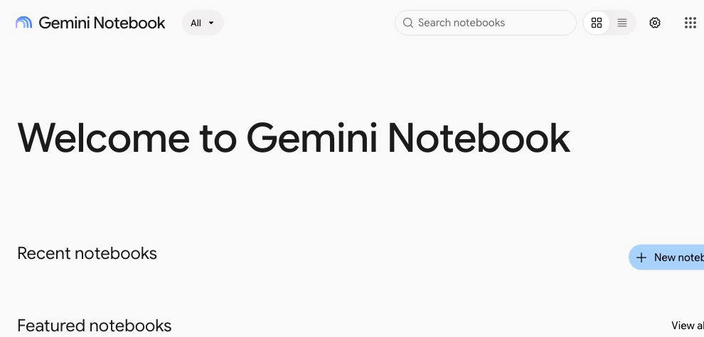
- Select + New notebook. Some screens say Create new notebook.
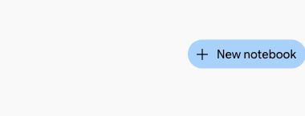
- In the window that opens, select Upload files. Using Google Docs or Slides? Select Drive instead. The big heading at the top of that window changes; you can ignore it.
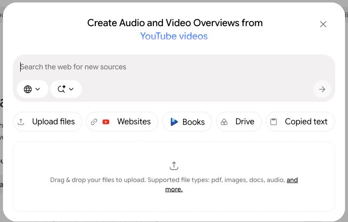
- Choose the four files for one unit, not all eight. For our Grade 3 unit, select the four files that start with Slide-44_Gr3-Science, then select Open. Using the Grade 6 unit? Choose the four Slide-44_Gr6-ELA files instead.
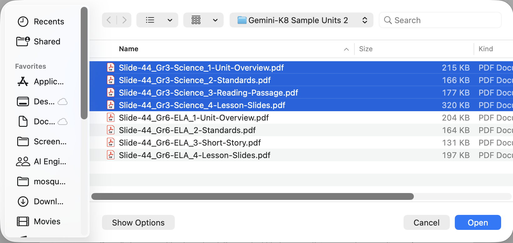
- Give it a moment to read your files. Each one appears under Sources with a check mark beside it. Checked files are the ones the notebook uses. Gemini Notebook also names the notebook for you, from what's in your files.
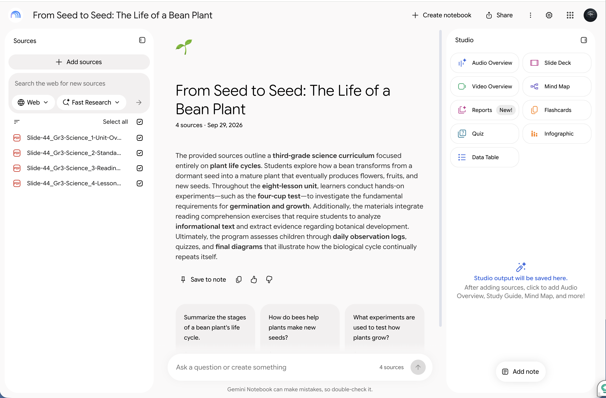
- Optional: want a different name? Select the name at the top and type a new one, like Gr 3 Plant Life Cycles. Can't find how? Skip it.
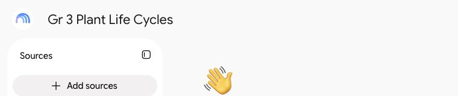
No Save button Your notebook saves on its own. It's ready now, so ask it your first question on the next slide.
A new look is rolling out Google is updating how Gemini Notebook looks this fall. If a button isn't where the picture shows it, look for the same words.
Ask questions your sources can answer
Ask your notebook a question, then check where the answer came from.
Try this · school account · approved tool · parent-proof
What are the learning goals of this unit, and which lesson covers each one?
Show me how, step by step 3 steps, with pictures, and more to try
- Paste the question into your notebook's chat box and press Enter.
Try this · school account · approved tool · parent-proof What are the learning goals of this unit, and which lesson covers each one?
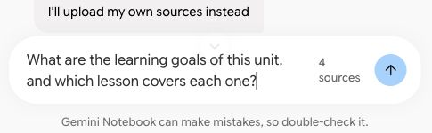
- See the small numbers in the answer? Hover over one to see the exact words it came from.
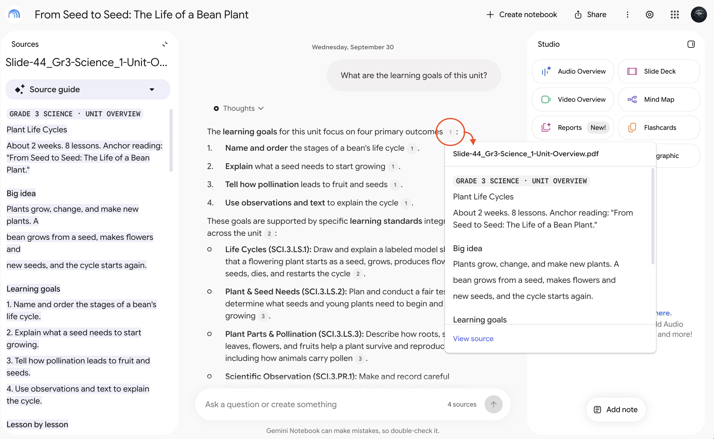
- Select the number, or View source in the pop-up, to jump to that spot in your source. When an answer is headed to students or families, check where it came from.
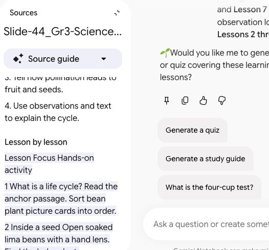
More to try
Try this
Which vocabulary words should I teach before students do the main reading in this unit, and why?
Try this
Where might students get confused in this unit? Point to the lesson or passage where it would happen.
Using the Grade 6 unit? Also try: What clues in the story suggest Mara might be wrong about Theo?
What happens when the answer isn't there?
Ask something your sources don't cover, and watch what happens.
Try this
What field trips would fit this unit, and how much do they usually cost?
What to notice and one setting to try
Does it tell you the sources don't cover this? Does it answer anyway? If it answers, are there citations? No citation means the answer didn't come from your documents. In a notebook, you can trace an answer back to a page, or notice when you can't.
Optional: answers shaped for teaching
- At the top right of the notebook, select the three dots (⋮), then Configure Chat.
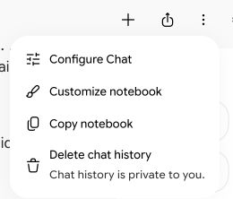
- Choose Default, Learning Guide, or Custom, then select Save. Custom lets you describe how you want answers, for example: "Answer as a 3rd grade teacher planning lessons. Keep it short and practical." If this optional window stays on Loading, close it and keep going.
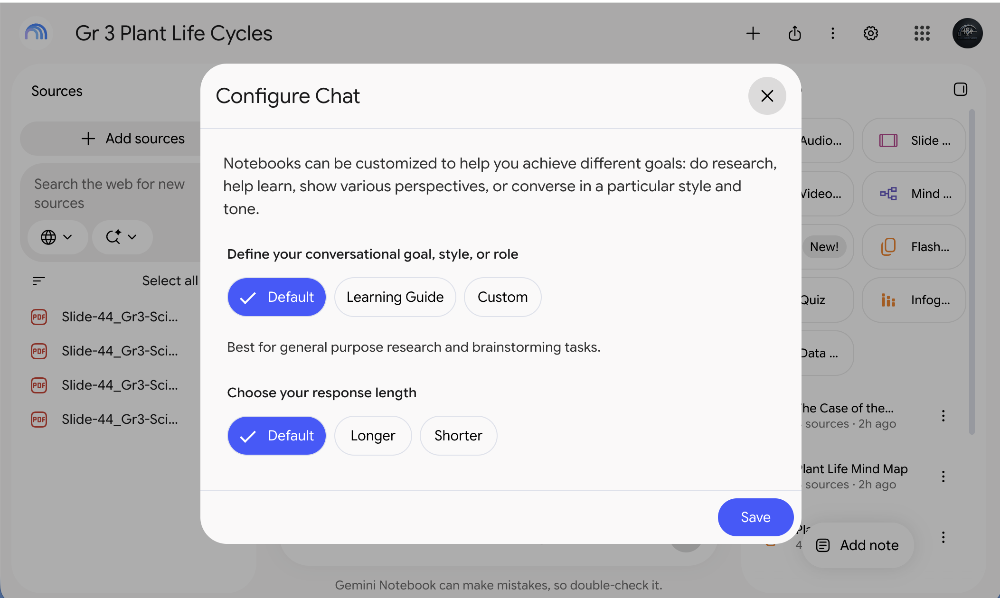
Keep the good answers
When an answer is worth keeping, select the pin icon under it. That's Save to note.
Show me how, step by step 2 steps, with pictures
- Under the answer, select the pin icon, the first of the small icons. That's Save to note. It's saved in your notebook with its citations. Saved answers can't be edited, so to change one, copy it into a Google Doc.
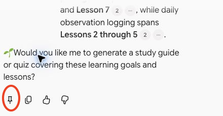
- Optional: share the notebook with a colleague. Select the share icon at the top right. Under Add people and groups, type their school email, choose Viewer or Editor, then select Send. Google's help says public sharing is off for school accounts, so families get things from you by download. That's Module 4.
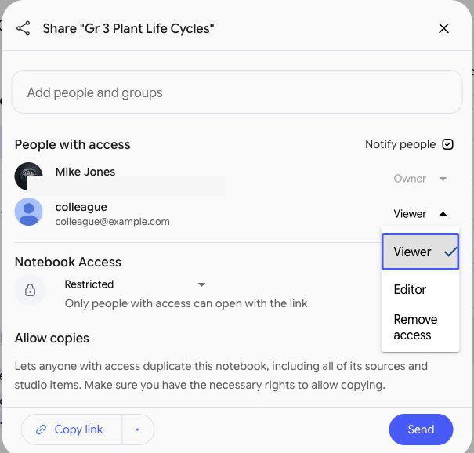
Connect your notebook to a Gem
Attach your notebook to your Lesson Plan Co-Planner Gem, then ask it to plan a lesson.
Missed the Co-Planner? Build it on slide 28 first.
Try this · school account · approved tool · parent-proof
Plan the third lesson in my unit notebook as a 45-minute lesson. Keep it consistent with my unit files, and list the standards it covers, using the codes in my files.
Show me how, step by step 6 steps, with pictures
- Go back to Gemini. You're in Gemini Notebook right now, which is a separate site. Switch to your Gemini tab, or select gemini.google.com.
- In Gemini's menu on the left, select Gems (it may say Explore Gems). Under My Gems, find the Lesson Plan Co-Planner and select its pencil icon.
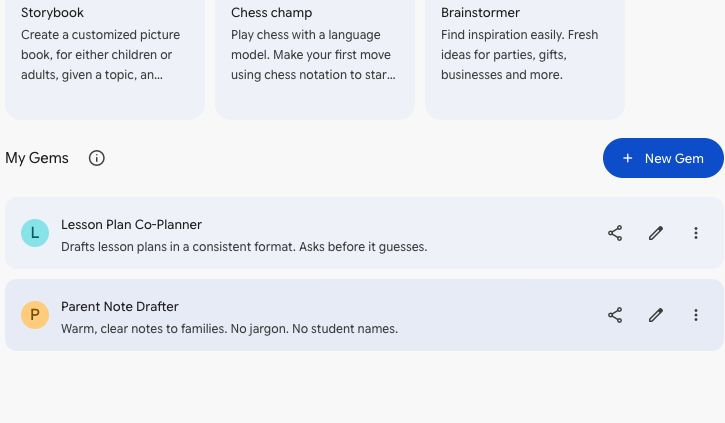
- Under Knowledge, select the plus sign (+), then Gemini Notebook. Some screens say NotebookLM or put Notebooks under More uploads.
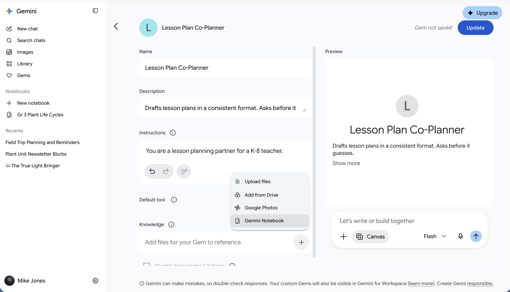
From a personal account. Your school account may not show the Upgrade button. - Check your notebook, then select Add. Look for the name it gave itself, or the one you chose.
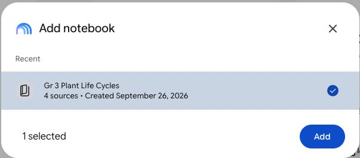
- Select the blue Update button at the top right, next to the words Gem not saved. When you edit a Gem you already made, the button says Update instead of Save.
- Select the back arrow (<) at the top left of the editor to return to your Gems. Select the Lesson Plan Co-Planner to open a chat with it, and paste this prompt. Your lessons aren't numbered? Name the lesson instead. If the Gem asks about your class first, answer it. That's the Gem working.
Try this · school account · approved tool · parent-proof Plan the third lesson in my unit notebook as a 45-minute lesson. Keep it consistent with my unit files, and list the standards it covers, using the codes in my files.
No Notebooks option? Your district may have that connection turned off. Attach your unit files under Knowledge instead. Uploads blocked too? Paste your unit overview into the chat with the Gem.
One catch A Gem that uses a notebook can't be shared. To share a Gem, attach files instead.
You may also see Notebooks inside Gemini
Your notebooks may show up in Gemini's menu too. For Module 4, stay at notebook.google.com.
Tell me more what works where
Google is adding a Notebooks section to the Gemini app's menu. It shows the notebooks you made in Gemini Notebook, kept in sync. Notebooks someone shared with you stay at notebook.google.com. It started reaching school accounts in September, so yours may or may not have it yet.
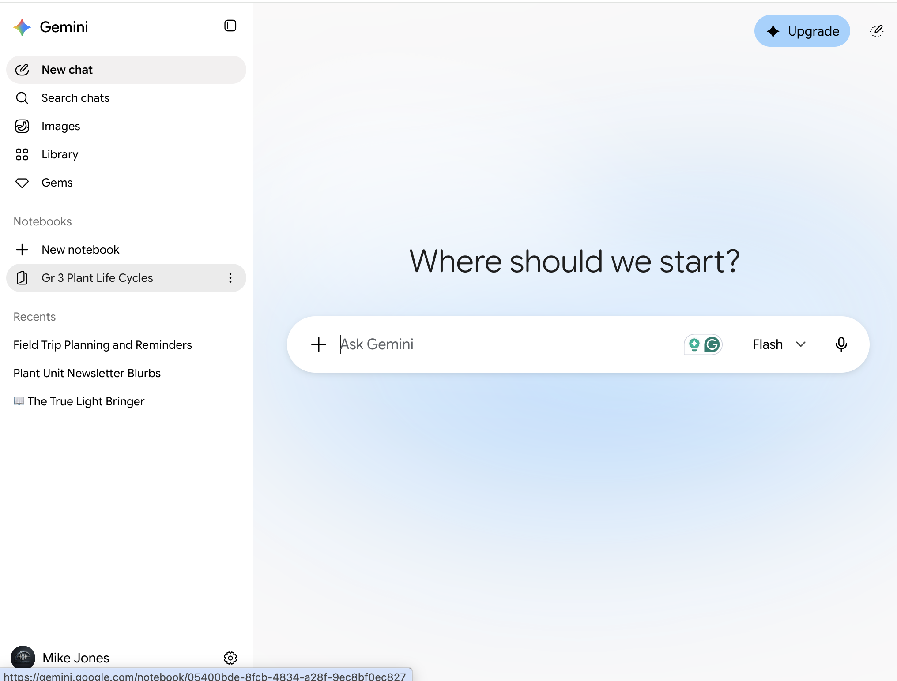
| Notebooks in Gemini | Gemini Notebook (notebook.google.com) | |
|---|---|---|
| Chat with your sources | Yes | Yes |
| Add sources | Yes | Yes |
| Audio Overviews, quizzes, slide decks, and other Studio items | No | Yes |
Make classroom-ready materials
Turn your notebook into materials in the Studio panel. Start the Audio Overview first; it takes the longest.
Show me how, step by step the Studio panel and daily limits, with pictures
- Find Studio in your notebook. It may be a panel on the right or a tab at the top. Select an item to set its options before you make it. Some versions show a pencil icon on the tile.
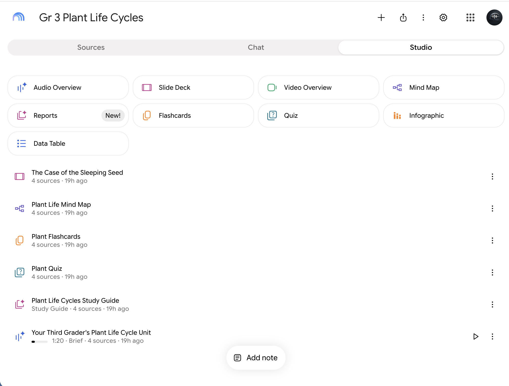
- Plan low and make each one count. Google's tables list 3 Audio Overviews a day for accounts like yours, and 10 each of reports, flashcards, quizzes, and mind maps, but the usage window now shows a percent instead. To check, open Settings, then Usage. It shows the percent you've used and when it resets.
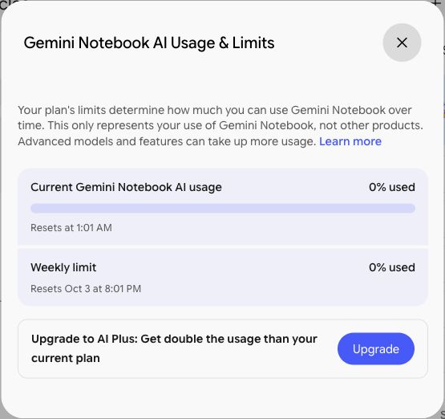
From a personal account. Your school account may not offer Upgrade to AI Plus, and its limits may be different.
Everything here is built from your sources, and it can still get things wrong. Give each one the 30-second check: accurate, right for the grade, fair, and on target.
An Audio Overview for families
Make a short Audio Overview that tells families what the unit is about. Use this as its focus.
Focus prompt · school account · approved tool · parent-proof
This is for families of our students. Explain what their children are learning in this unit and why it's worth learning, in plain language. Suggest two simple, free things families can do at home to support the learning, safe for kids. Keep it warm and free of education jargon.
Show me how, step by step 6 steps, with pictures
- In the Studio panel, select Audio Overview to open its options. If you see a pencil icon, you can select that too.
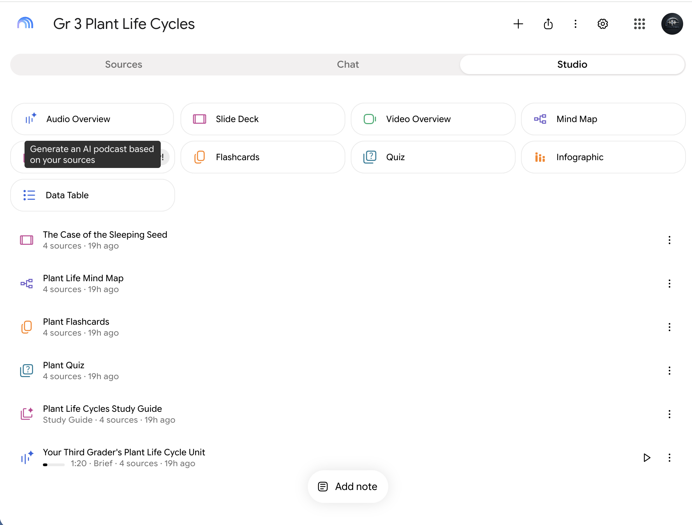
- Under Format, choose Brief: one speaker, under two minutes, which suits busy families. Brief has no length choice.
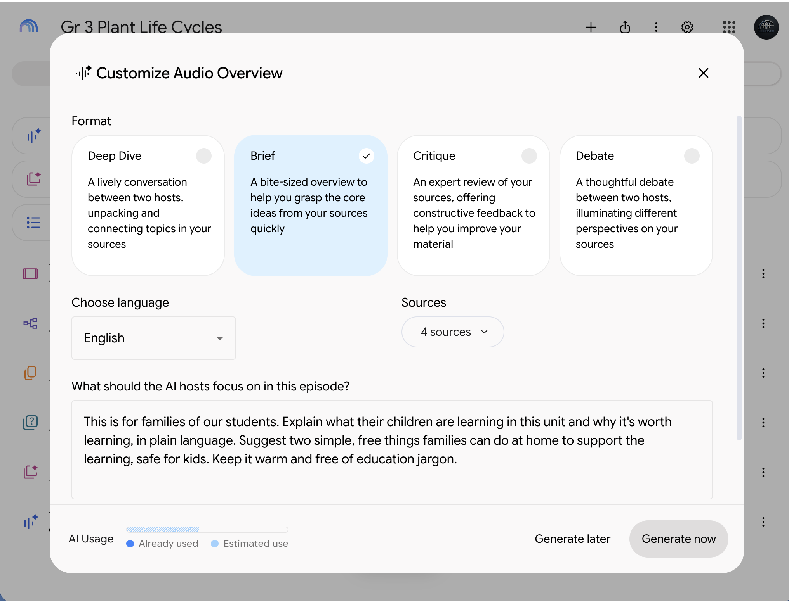
Want something longer? Deep Dive, the default, is a talk between two hosts. With Deep Dive, a Length choice appears: Short, Default, or Long.
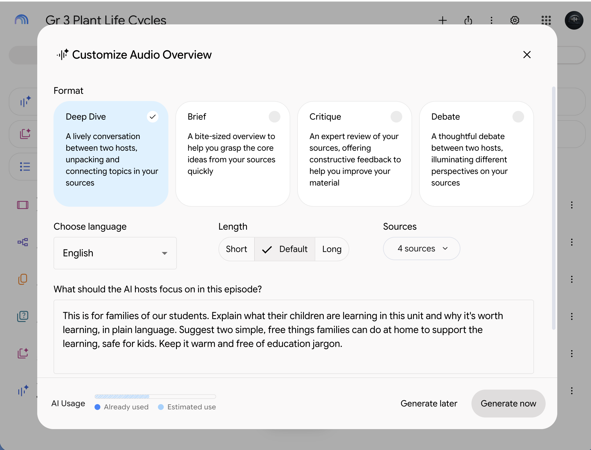
- Paste the focus prompt into the box that asks What should the AI hosts focus on in this episode? Then select Generate now.
Focus prompt · school account · approved tool · parent-proof This is for families of our students. Explain what their children are learning in this unit and why it's worth learning, in plain language. Suggest two simple, free things families can do at home to support the learning, safe for kids. Keep it warm and free of education jargon.
- Under the Studio tiles you'll see Generating Audio Overview and Come back in a few minutes. Go on to the next slide while it works, then come back here.
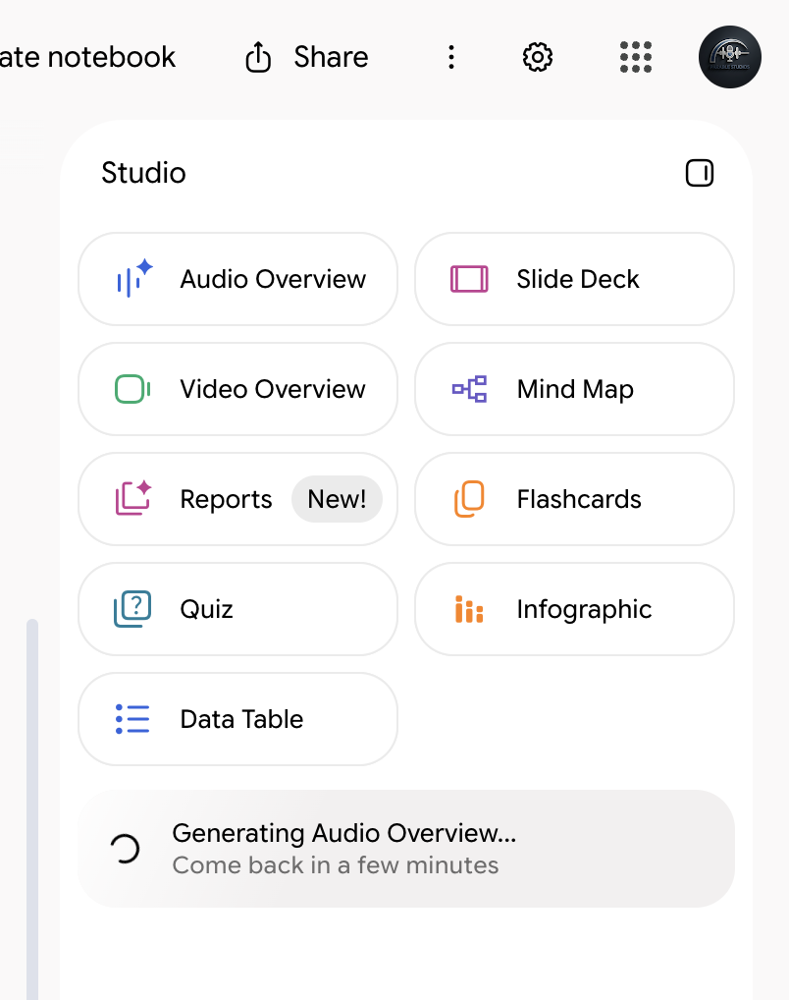
- When it's ready, its name shows under the tiles. Select the triangle to the right of the name. Its label says Play. The player opens at the bottom of Studio. Listen all the way through.
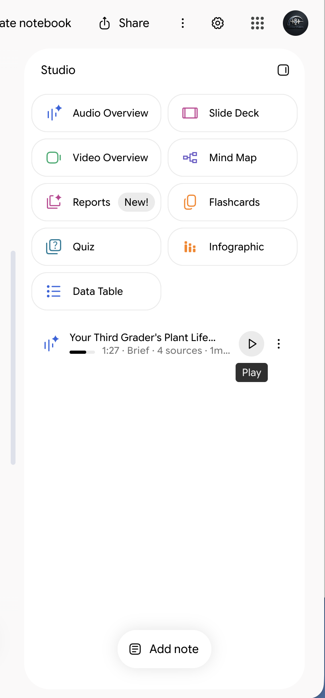
- To save it, select the three dots (⋮) next to its name, or the three dots in the player. Either one opens the same menu, and it pops up between them. Select Download to save the audio file. Share it through a channel your district approves, like your class page or newsletter. Tell families it was made with AI from your class materials. Some districts require that, and it's good practice anyway.
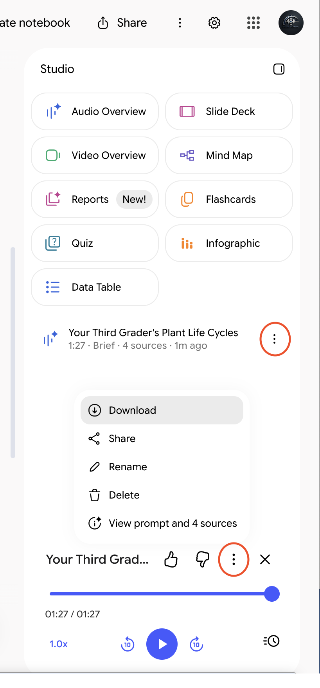
Google's help says public notebook sharing is off for school accounts, so a download is the dependable route.
30-second check Facts that match your unit. Nothing that sounds odd for your grade. Examples that fit every family. A message that serves your lesson goal. If something is off, change the focus prompt and make a new one tomorrow.
A study guide
Make a study guide, then export it to Google Docs. After you paste the prompt, change [grade] to your grade.
Report prompt · school account · approved tool · parent-proof
A study guide for my [grade] students: key vocabulary with simple definitions, the main ideas of the unit in order, and five practice questions with an answer key at the end. Keep the words simple enough for [grade] students to read on their own.
Show me how, step by step 4 steps, with pictures
- In Studio, select Reports. The window that opens is called Create report.
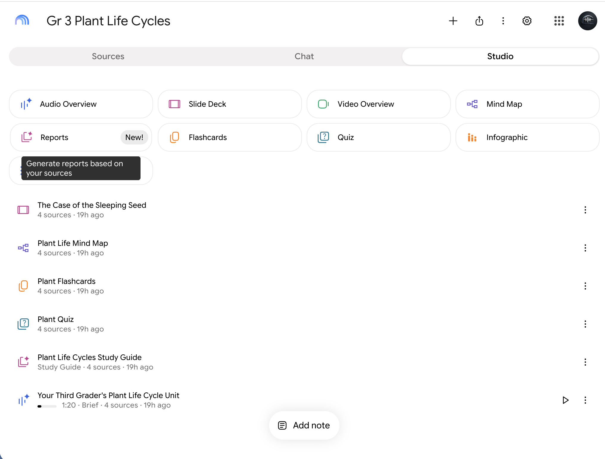
- Under Format, choose Document. Under Template, select the pencil on Study Guide so you can add your own instructions. Don't see Study Guide? Choose Create Your Own.
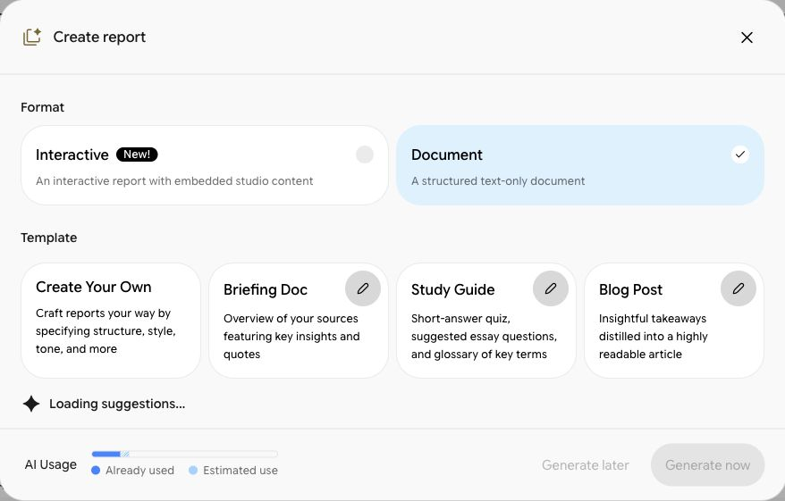
- Paste the prompt into the box that opens, change [grade], then select Generate now. Read all of it. No box to paste into? Select Generate now anyway, or paste the prompt into the notebook's chat and copy the answer into a Google Doc.
Report prompt · school account · approved tool · parent-proof A study guide for my [grade] students: key vocabulary with simple definitions, the main ideas of the unit in order, and five practice questions with an answer key at the end. Keep the words simple enough for [grade] students to read on their own.
- Select the three dots (⋮) at the top right of the report, then select Export to Docs to get a Google Doc you can edit and print.
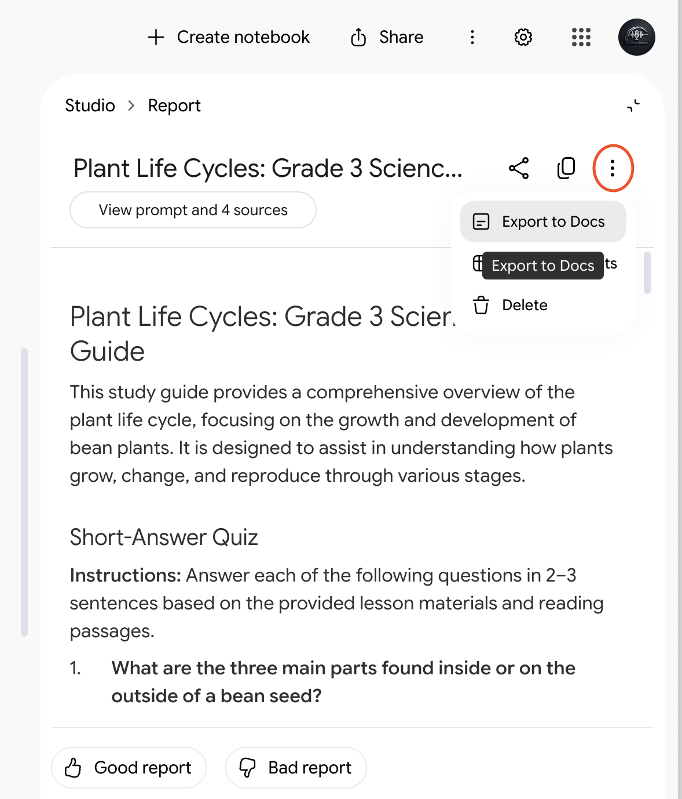
30-second check Check the reading level first. Study guides tend to drift toward adult language. Fix it with a follow-up or by hand, then check the answer key against your sources.
A quiz
Make a practice quiz, then a version students can take. After you paste a prompt, change [grade] to your grade.
Quiz focus prompt
Focus on the main ideas of this unit. Use words [grade] students can read on their own.
Show me how, step by step 3 steps, with pictures
- In Studio, select Quiz to open its options. Some versions have a pencil icon or group flashcards and quizzes together. Pick the Number of Questions and the Level of Difficulty, then paste the focus prompt into the box that asks What should the topic be?
Quiz focus prompt Focus on the main ideas of this unit. Use words [grade] students can read on their own.
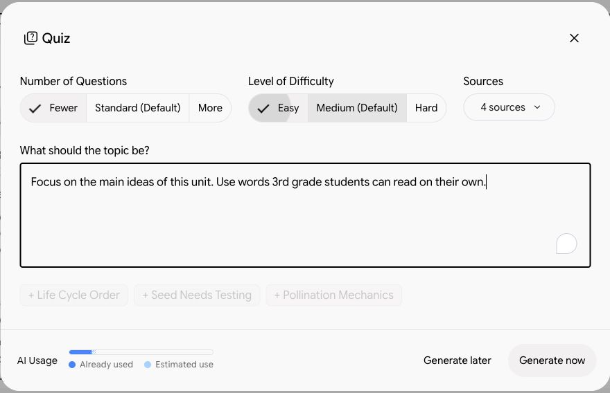
- Select Generate now, then take the quiz yourself. Did every answer match your sources?
- Google doesn't document a way to download Studio quizzes, so treat them as practice. For a version you can hand out or put in Google Forms, paste this into the notebook's chat:
Chat prompt · school account · approved tool · parent-proof Write 8 multiple-choice questions on this unit for [grade] students, with 3 answer choices each and an answer key at the end. Base every question on the sources, and cite the source for each one.
Copy the result into a Google Doc, or into Google Forms one question at a time. Before students see it, take out the citation numbers and the answer key.
30-second check Check every answer against your sources. Then check the wrong choices: believable, not silly, and no trick questions.
Flashcards
Make flashcards, then download them to open in Google Sheets. After you paste the prompt, change [grade] to your grade.
Flashcard focus prompt
Key vocabulary from this unit, with definitions [grade] students can understand on their own.
Show me how, step by step 3 steps, with pictures
- In Studio, select Flashcards to open its options. Some versions have a pencil icon. Pick the Number of Cards and the Level of Difficulty, then paste the focus prompt into the box that asks What should the topic be?
Flashcard focus prompt Key vocabulary from this unit, with definitions [grade] students can understand on their own.
- Select Generate now, then flip through the cards.
- To keep them, open the three-dot menu on a card and select Download set. They save as a CSV file. Upload it to Google Drive, then open it with Google Sheets. From there you can print them or make paper cards.
30-second check One clear idea on the front of each card. The back answers the question without giving away more than it asks.
A mind map
Make a one-page map of how the ideas in your unit connect.
Show me how, step by step 3 steps, with pictures
- Select Mind Map in Studio. Some versions also show a Mind Map chip near the chat box.
- It's saved in Studio. Open it, and select the small arrows on each branch to open it up.
- To print it or project it on the first day of the unit, select the download button at the bottom right.
30-second check Look at the big branches. Are those the main ideas of your unit? If a key idea is missing, it may be missing or buried in your sources too. Worth knowing either way.
A slide deck
Make slides for one lesson, then download them to edit in Google Slides. After you paste the prompt, fill in the lesson.
Slide deck focus prompt
Slides for [lesson name or number] from this unit. Big text, few words per slide, and one question for students on the last slide.
Don't see Slide Deck? Google only turns it on for school accounts marked 18 or older. Ask the notebook's chat for a slide-by-slide outline instead, and build it in Google Slides.
Show me how, step by step 3 steps, with pictures
- In Studio, select Slide Deck to open its options. Some versions have a pencil icon. Choose a format: Detailed Deck or Presenter Slides.
- Pick a Length, paste the focus prompt into the box that asks you to describe the slide deck, then select Generate now.
Slide deck focus prompt Slides for [lesson name or number] from this unit. Big text, few words per slide, and one question for students on the last slide.
- When it's ready, open the menu at the top right and select Download PowerPoint (.pptx) or Download PDF Document (.pdf). To edit it, upload the PowerPoint file to Google Drive, then open it with Google Slides.
30-second check Read every slide as a student would. Check the facts, check any images for anything odd, and cut words. A student should be able to read a slide in five seconds.
Before anything leaves your hands
You made a lot, fast. The last step is always yours.
- Read all of it.
- Run the 30-second check.
- Scrub out names and details.
- Fill in anything in [brackets].
- Own it. If you wouldn't put your name on it, don't send it.
Your judgment stays in charge Gemini makes drafts. You make the decisions.
Look at what you made
- A prompt pattern for every day: CRAFT.
- Two or three classroom drafts.
- Two Gems: a Parent Note Drafter, and a Lesson Plan Co-Planner that knows your unit.
- A notebook built on a real unit.
- Materials for students and families.
And the part that will outlast any one tool: you know how to check what it gives you.
Try this week
One small thing a day, fifteen minutes or less.
| Monday | Build one more Gem from the library. |
| Tuesday | Make a notebook for the unit you're teaching now. |
| Wednesday | Turn one lesson into an exit ticket, and check it. |
| Thursday | Make an Audio Overview or a study guide, and review all of it. |
| Friday | Show a colleague one thing you made. |
Take it with you
Download your workbook before you close this tab. It has every prompt, every Gem, and every step, with the pictures.
- Workbook, editableWord (.docx), opens in Google Docs
- Workbook, ready to printPDF
- Quick reference cardPDF, 1 page
- Try this weekPDF, 1 page
Questions later? Visit woodenboyindustriesai.com. Thank you for your time today, and for the work you do with kids every day.
Tell me more opening the workbook in Google Docs
Upload the .docx to your Google Drive, then open it. Every prompt copies cleanly from there.